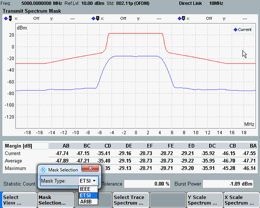

Relative vs. Absolute Limits
For IEEE 802.11p signals, you can switch between limit sets with absolute or relative limits. The Y-axis of the diagram changes accordingly (dBm or dB). You can select a mask via the "Display" hotkey "Mask Selection" or via the measurement control settings, see "Mask Selection".

ETSI transmit spectrum mask results (802.11p)
The resolution bandwidth used for the IEEE mask and the ARIB mask is 100 kHz. For the ETSI mask, the resolution bandwidth is 1 MHz.